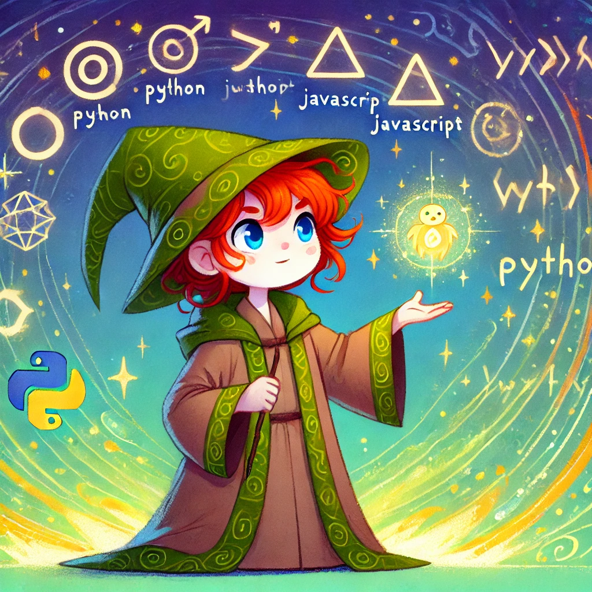
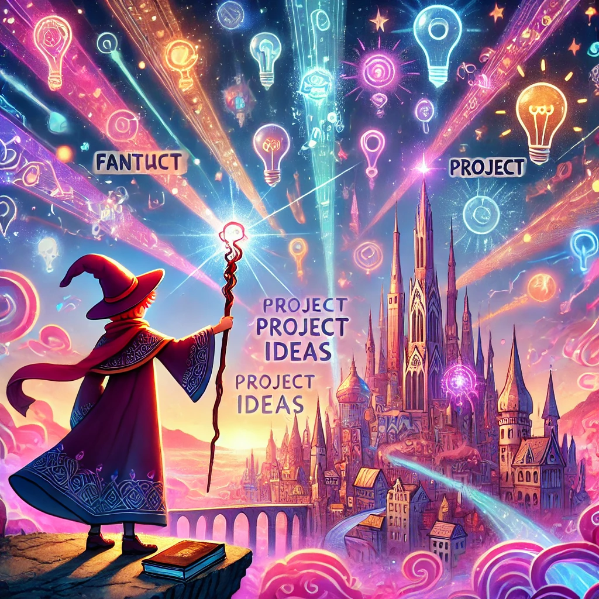
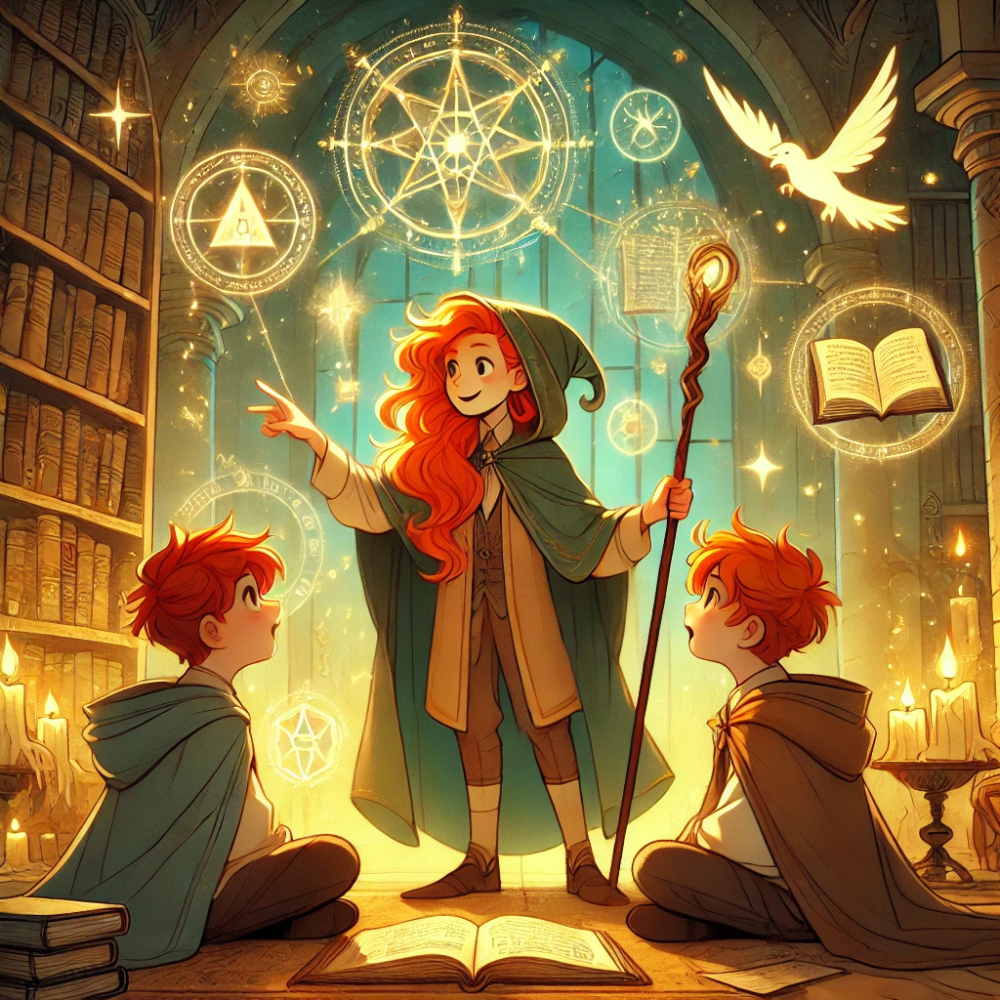

Reflections on AI
This class has really challenged my instincts to writer first and experiment later as my main mode of expression, so in that spirit I’m going to do a multimodal situation with the help of ChatGPT as a means of reflecting on the semester and sharing about future work!
I have done and learned things in this class I could not have imagined at the start of the semester, not to mention previously not knowing many of the methods involved existed. I feel so empowered to make things now - it’s like build in tech support and learning on YouTube but fast for learning new tactics, which has been immensely helpful with the pace of the semester and project in progress. I have already used knowledge gained through this course to complete my very first Python data analysis for a study, which felt very cool. I will take techniques for both the applications and prompting of AI into the theatre AI project that will come to fruition in the upcoming Spring semester, using things I learned to help develop and enact an experimental vision in a form that I love. Theatre is often steeped in traditionalism and resistant to change, and I’m so happy to research AI in theatre and find people working to move the form in new directions and use the technology available to us.
I hope to make projects like those that the public humanities prototype and the theatre AI project helped me brainstorm, such as a dictionary app project for our theatre group to collaborate on together; a space for searching public domain theatre that can be filtered by [genre] [ensemble size] [length] [writer demographics] [intended audience]; an interactive project post-show that provides examples and ways for theatre practitioners of varying skill levels to get AI involved in their projects; more. I also feel way more confident about what I’d like my dissertation to potentially involve, an interactive digital theatre production. I think this makes that feel accessible in the timeline of the PhD program, and I am so excited to be thinking about making that in a realistic, actualizable way.
I also hope to better educate people around me on how to replace their fear around AI with a more healthy awareness and understanding of it. I already shared Mitchell's Artificial Intelligence: A Guide to Thinking Humans with multiple people, have been touting “google is people” inspired by Noble’s Algorithms of Oppression, and have been showing people how to use AI to troubleshoot technical problems instead of having to wait for someone to google it for them who will have more context for the search results. I am not only no longer afraid, I am actually excited for the availability of AI in our collective future.
Of course, under a capitalist system I am wary of the use of AI by companies in power, and over the potential inability to regulate systems that already exist in and are used by the public. It is too late to put the cat in the bag, and I foresee large challenges around fair labor, fair use, and human greed/the subscription model as predicted and outlined by many of the articles we engaged with over the course of the semester. I intend to keep myself up to date with AI not only by continuing to seek out and use programs, but also by tracking news centered around it, watching for how it is being used and by whom. I think overall I have decided it is better to embrace it than to ignore it out of fear or misunderstanding. I feel empowered, and have new firsthand experience into how powerful it can be for someone with minimal context to gain competencies in new methods of studying and creating, and I feel that my work is better for the availability of these tools.